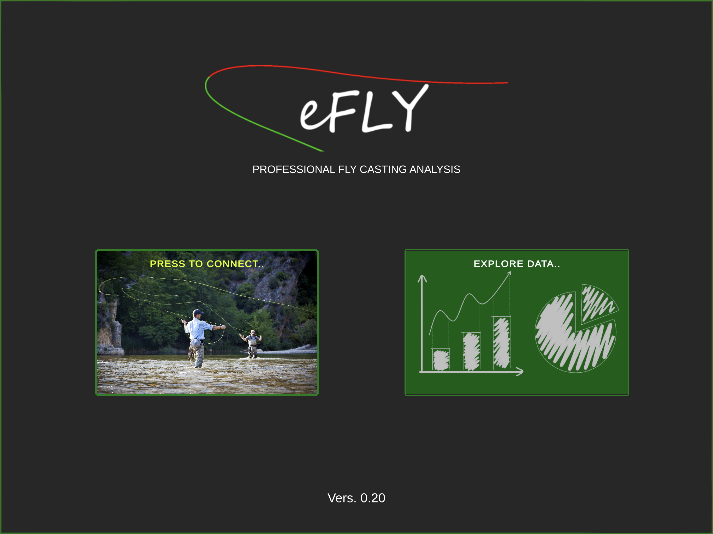

Introduction
Overview
The eFly is a compact IMU platform specifically created for fly casting dynamic data acquisition and analysis. It combines on-board sensors and data processing algorithms with WiFi interfaces to create a versatile platform well suited to both real-time and data-logging applications. The system is equipped with a powerful internal processor that processes the data and transfers it in real time to the analysis application. The sensor is installed directly on the axis of the fishing rod and measures its angles, speeds, accelerations and trajectories with a frame rate of 270 Hz. The processed data is transferred to the device in real time where they are graphically displayed and recorded for the subsequent analysis.
Sensor
| Item | Value |
|---|---|
| Gyroscope Range | 2000 deg/s |
| Gyroscope Rate | 270 Hz |
| Gyroscope Resolution | 16 bit |
| Accelerometer Range | 16 g |
| Accelerometer Rate | 270 Hz |
| Accelerometer Resolution | 16 bit |
| Magnetometer Range | 9000 uT |
| Magnetometer Rate | 270 Hz |
| Magnetometer Resolution | 16 bit |
| AHRS Algorithm Rate | 270 Hz |
| Static Angle Accuracy | <1 deg RMS |
| Wireless | Wi-Fi |
| External Power Supply | 4.5-6 V |
| Charging | USB-C |
| Weight | 44 g |
| Box | Nylon PA12 Sintered |
| Operating Temperature | 0-30 C |
On-board sensors include a triple-axis gyroscope, accelerometer, and magnetometer, as well a barometric pressure sensor and humidity sensor.
An on-board AHRS sensor fusion algorithm combines inertial and magnetic measurements to provide a drift-free measurement of orientation relative to the Earth.
Each device is individually calibrated using robotic equipment to achieve the specified accuracy.
Software

The eFly app is available for iOS, Android. For both operating systems the interface remains unchanged. The app interfaces with the sensor via Wi-Fi, acquires data and synchronizes them with the video acquired by the device. eFly allows you to save, consult and analyze data, both numerically and graphically with the help of synchronized video.
The eFly App is available in Apple Store and Google Play Store.